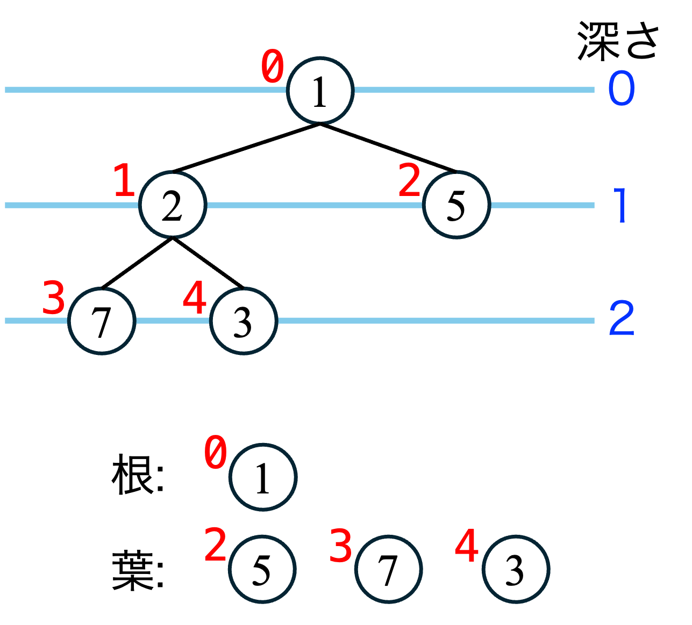

12 データ構造 2
12.1 前回演習の解答
- スタックの使い方
12.2 本日のメニュー
- グラフ
- ヒープ
12.3 グラフ
頂点（vertex）を表す離散集合\(V\)と，頂点間のつながりを表す辺（edge）の集合\(E\subseteq V\times V\)で構成される\(G(V, E)\)をグラフ（graph）と呼ぶ． グラフは，個人間の交友関係や通信機器間のネットワークなど，つながりをもつ複数の要素を表現する記法として用いられる． 頂点のことをノード，辺のことを枝と呼ぶこともある．
辺に向きの概念があるグラフは有向グラフ（directed graph）といい，そうでない場合は無向グラフ（undirected ）という． 言い換えると，無向グラフでは，任意の頂点\(p, q\in V\)について，\((p,q)\in E \Rightarrow (q,p) \in E\)が成り立つ． 無向グラフは有向グラフの特殊ケースである．例えば通信可否がノード間の空間的な距離のみによって決まる場合は\(p\)から\(q\)への通信が可能ならば逆も可能であるので，無向グラフで表現できる．
頂点\(p\in V\)から頂点\(q\in V\)へ，辺と頂点を経て到達できる場合，つまり頂点の列\(p=v_1, v_2, \dots, v_k = q\)について\((v_i,v_{i+1})\in E\), \(i= 1, 2, \dots, k-1\)である場合， \(p\)-\(q\)間に路（path）が存在するという．このとき路の長さは\(k-1\)である． 路の頂点が高々一度しか路に現れない場合，つまり\(v_1, \dots, v_{k}\)が相異なる場合，路は単純（simple）という． 路の頂点\(v_1, \dots, v_{k-1}\)が相異なり，\(v_1 = v_k\)であるとき，単純閉路という．
グラフの任意の頂点から任意の頂点への路が存在する場合，そのグラフは連結であるという．有向グラフのときは，有向路が存在すれば強連結，無向グラフに置き換えたときに連結であれば弱連結という．
以下では無向グラフのみを考える．
12.4 木
連結で単純閉路をもたないグラフを木（tree）という． 木では，特定の頂点を基準に選び（根（root）とよぶ），その他の頂点への路を根から下へ向かう路上に配置した図に書き表すことができる． このとき，根からの路の長さごとに階層を揃えて描く．この階層を深さという．
ある頂点の上，つまり根に近い方の辺でつながった頂点を親といい，下，つまり根から遠ざかる方向に辺でつながった頂点を子という． 子を持たない頂点は葉という．葉は木の末端の頂点である．
根をもつ木で，頂点の子が高々2つの場合，二分木よぶ． 二分木では，左右の概念を導入して，左の子と右の子を区別する．
12.5 ヒープの定義

二分木を構成する頂点に対して順序が定義できる値をひとつ対応させる．例えば頂点に実数をひとつ割り当てる． 以下の条件が成り立つ場合，その二分木1をヒープとよぶ：
- 葉の深さは\(d\)または\(d-1\)である（すべての葉の深さの差は高々1）
- 深さ\(d\)の葉は左詰めに配置されている
- 深さ\(d-1\)以下の部分について，各頂点はちょうど2個の子をもつ
- 葉以外のすべての頂点について，その頂点の値はすべての子の値より小さいか等しい
とくに最後の条件をヒープ条件という2． ヒープ条件から，根の値は最小値である．
1–3番目の条件を言い換えると，根をトップに頂点が上から順に左詰めで並んでいる二分木であると言える． 葉の深さが最大で\(d\)のヒープでは，最大で\(2^0 + 2^1 + \cdots + 2^d = 2^{d+1} -1\)個の頂点がある．
ヒープは，データを上下の階層で大小関係が成立する木構造で表現しておくことで，最小値/最大値を素早く取り出すことができる．後述するようにデータの挿入や削除について，データ数\(n\)に対して\(O(\log n)\)でヒープを保持したまま操作が可能である．
12.6 ヒープの実装
ヒープは配列とデータ数を表す変数を用いて実装できる．
#define HEAP_SIZE 100
typedef struct {
int data[HEAP_SIZE];
int size;
} Heap;
void initHeap(Heap *h) {
h->size = 0;
}ヒープの定義から，以下の事実が従う．
ヒープの頂点を，根から深さの順に\(0, 1, 2, \dots\)と番号を付ける．同じ深さの頂点は，左から順に並べる． すると，番号\(i\)の左の子は（もし存在するなら）番号\(2i+1\)，同じく右の子の番号は\(2i+2\)である．
根の番号を\(1\)から始めるとすると，\(i\)の左の子は\(2i\)，右の子は\(2i+1\)である． 頂点の番号づけは上述のように（上詰め左詰めで）順序が決まるので，現在の総データ数だけ保持しておけば配列で表現できる．
12.7 ヒープの操作
データからどのようにヒープを構築するかは後述するとして，まずは，ヒープが手元にあるとして，ヒープに対する操作を考えよう．
12.7.1 挿入
ヒープに要素を追加するには，まず空いている末尾に追加して，ヒープ条件が成立するまで親子間を入れ替える．実装例は以下のとおり． ある頂点に対応する配列要素のインデックスを\(i\)とすると，親のインデックスは\(\lfloor (i-1)/2 \rfloor\)であることに注意しよう．ここで，\(\lfloor \cdot \rfloor\)は小数点以下を切り捨てる床関数である．
子のインデックスを\(i\)とすると，親のインデックスは\(\lfloor (i-1)/2 \rfloor\)である．
void swap(int *x, int *y) {
int tmp = *x;
*x = *y;
*y = tmp;
}
void insert(Heap *h, int value) {
if (h->size >= HEAP_SIZE) {
printf("ヒープが満杯です\n");
exit(1); // 異常終了 <stdlib.h>が必要
}
// 末尾に追加
int i = h->size;
h->data[i] = value;
h->size++;
// ヒープ条件を満たすまで親子を入れ替え
while (i > 0) {
int parent = (i - 1) / 2;
if (h->data[parent] > h->data[i]) {
swap(&h->data[parent], &h->data[i]);
i = parent;
} else {
break;
}
}
}12.7.2 最小値の削除
データの最小値を取り出して削除するには，まず根を取り出して削除し，新たな根として配列末尾の要素を代入する． 新たな根と子がヒープ条件を満たさない場合は，左右の子のうち値が小さい方と入れ替える． 入れ替えた先の階層において，ヒープ条件が成立するか葉になるまで入れ替えを繰り返す．
int pop(Heap *h) {
if (h->size == 0) {
printf("ヒープは空です\n");
exit(1); // 異常終了
}
// 最小値を返す
int minVal = h->data[0];
// 末尾を根に
h->data[0] = h->data[h->size - 1]; // 末尾インデックスは サイズ数 - 1
h->size--;
// ヒープ化
int i = 0;
while (1) {
int left = 2 * i + 1;
int right = left + 1;
int smallest = i; // 入れ替え対象のインデックス
// 左の子からヒープ条件をチェック
if ((left < h->size) && (h->data[left] < h->data[smallest])) {
smallest = left; // 左の子が存在して自分より小さいとき
}
if ((right < h->size) && (h->data[right] < h->data[smallest])) {
smallest = right;
}
if (smallest != i) {
swap(&h->data[i], &h->data[smallest]);
i = smallest;
} else {
break; // 子が存在しない or 子より小さい
}
}
return minVal;
}12.7.3 ヒープの構築
与えられた数列からヒープを構築する方法を考えよう．単純に空のヒープに対して前述の挿入を繰り返すと，挿入1回で\(O(\log n)\)であるから\(O(n\log n)\)を要する．
少し工夫して，\(O(n)\)のヒープ化を考えよう． まず，与えられた数列をそのままヒープに当てはめる． つぎに，葉の親，つまり最小の2分木についてヒープ条件を満たすように入れ替えを行う． 葉の親の階層でヒープが構成できたら，その上の階層で同様の操作を行う．
このとき，ヒープ条件を満たすような入れ替えは，最小値削除操作における，仮の根をヒープ条件を満たすように下ろしていく操作と同様である． そこで，この操作を別の関数heapifyとしてくくりだし，最小値削除popと共有することができる．
// 頂点iをヒープ条件を満たすまで下ろす
void heapify(Heap *h, int i) {
while (1) {
int left = 2 * i + 1;
int right = left + 1;
int smallest = i;
if (left < h->size && h->data[left] < h->data[smallest]) {
smallest = left;
}
if (right < h->size && h->data[right] < h->data[smallest]) {
smallest = right;
}
if (smallest != i) {
swap(&h->data[i], &h->data[smallest]);
i = smallest;
} else {
break; // 子が存在しない or 子より小さい
}
}
}
// ヒープ構築
void makeHeap(Heap *h, int array[], int n) {
if (n > HEAP_SIZE) {
printf("サイズが大きすぎます\n");
exit(1); // 異常終了
}
// 与えられた順にヒープに詰める
for (int i = 0; i < n; i++) {
h->data[i] = array[i];
}
h->size = n;
// 最下層の親ノードからヒープ化
for (int i = (n - 2) / 2; i >= 0; i--) {
heapify(h, i);
}
}
// 最小値を出力してヒープから削除
int pop(Heap *h) {
if (h->size == 0) {
printf("ヒープは空です\n");
exit(1); // 異常終了
}
// 最小値を返す
int minVal = h->data[0];
// 末尾を根に
h->data[0] = h->data[h->size];
h->size--;
// ヒープ化
heapify(h, 0);
return minVal;
}関数makeHeapの最後のfor文（36行目）では，子をもつ最下層の頂点から上の階層に向かって順に処理を行う． 配列のインデックス\(i\)に対応する頂点の親は，\(\lfloor (i-1)/2 \rfloor\)であるから，配列の要素数を\(n\)として，最後の要素\(n-1\)の親のインデックスは\(\lfloor (n-2)/2 \rfloor\)である．
12.8 演習問題
12.8.1 問題1
ヒープを使って実数列を昇順に並び替える（ソート）プログラムを作成せよ． * テスト数列: \(10, 3, 5, 7, 2, 8, 1, 13\) → \(1, 2, 3, 5, 7, 8, 10, 13\)
12.8.2 問題2
問題1の計算量を説明せよ．